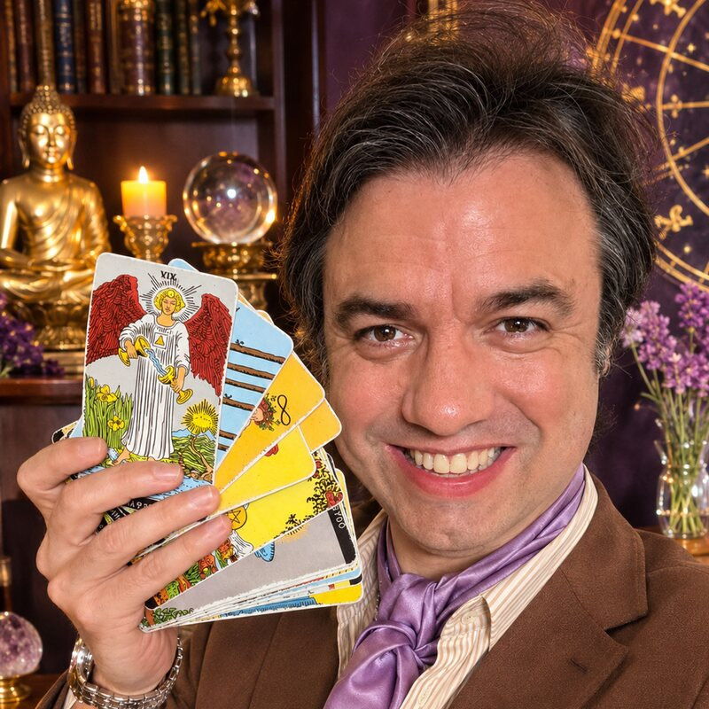

JANTAR DE GRUPO?

Cada um leva a sua carta para 2027
Natal · aniversários · despedidas · jantares de amigos e de empresa
💬 Falar com o Mestre no WhatsAppA mensagem já vai escrita: é só carregar em Enviar. Não precisa de ter a data marcada.
A leitura é feita à parte, por isso cada convidado fica à vontade para perguntar o que quer saber a sério: o trabalho, o amor, a família ou o ano que vem. O Mestre Alberto lê o Tarot e os astros há 18 anos.
200 €
≈ 16,67 € por pessoa · deslocação incluída
💬 Pedir data para 12 pessoasOs jantares de Natal de empresa e de amigos juntam-se quase todos nas mesmas semanas. Se já têm o jantar em vista, mandem já mensagem para guardar a data. E o Tarot à Mesa faz-se o ano inteiro: despedidas de solteira, aniversários, encontros de antigos colegas ou qualquer festa em que um grupo se junte à mesa.
💬 Guardar a nossa dataPrefere uma consulta só para si? Veja a Loja Mística ou tire já as cartas no Tarot Grátis.
Cerca de 10 minutos por pessoa: tiram-se 3 cartas e responde-se a uma pergunta. Com 12 pessoas, o Mestre Alberto fica à volta de 2 horas no jantar, o que deixa tempo para todos se sentarem à mesa, comerem e conversarem.
O valor de 200 € cobre até 12 pessoas. A partir da 13.ª, cada pessoa a mais custa 25 €. Assim, um grupo de 15 pessoas paga 275 €. Não é obrigatório que todos os convidados tirem as cartas: o preço é o mesmo até às 12 pessoas.
Num cantinho à parte do restaurante ou da casa, com uma mesa pequena e duas cadeiras. Cada convidado senta-se sozinho com o Mestre Alberto, para que a sua leitura fique entre os dois e ninguém da mesa ouça a pergunta nem a resposta. Vale a pena combinar este espaço com o restaurante quando fizer a reserva.
Basta mandar um olá ao Mestre Alberto pelo WhatsApp: a mensagem já vai escrita nos botões desta página. Depois combinam o dia, a hora, o local e quantas pessoas são. A data fica reservada com um sinal de 50 €, que é descontado no valor final. O resto paga-se no dia do jantar.
A deslocação está incluída até cerca de 30 km de Fafe: Fafe, Guimarães, Felgueiras, Póvoa de Lanhoso, Vieira do Minho, Celorico de Basto, Cabeceiras de Basto e Braga. Para mais longe, combina-se o valor da viagem caso a caso.
Não. Dezembro é o mês dos jantares de empresa e de amigos, mas o Tarot à Mesa faz-se o ano inteiro: despedidas de solteira, aniversários, jantares de amigos, encontros de antigos colegas ou qualquer festa em que um grupo se junte à mesa.